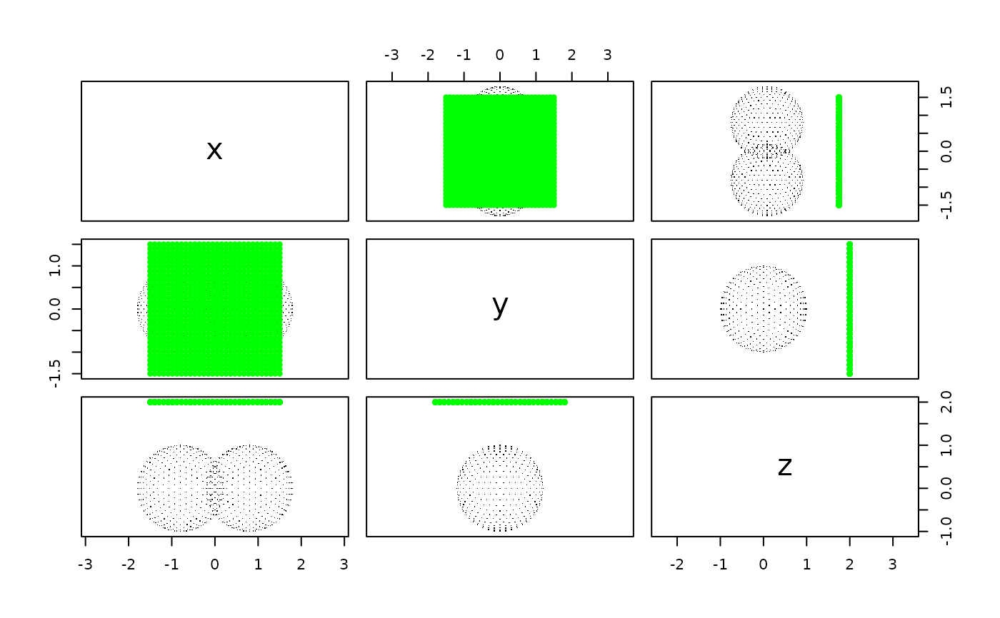
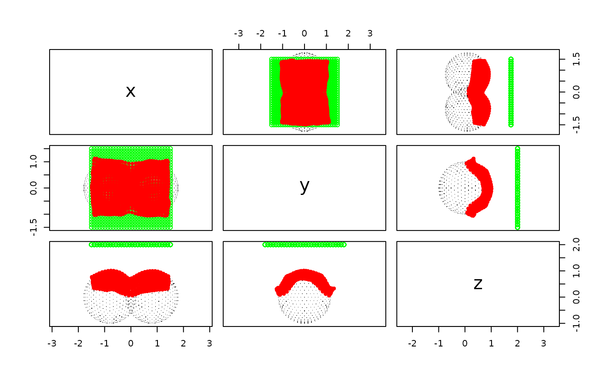

Project a two-dimensional plane (such as 'ECoG' grid) to a
three-dimensional surface while preserving the order
Usage
project_plane(
target,
width,
height,
shape,
initial_positions,
translate_first = TRUE,
diagnostic = FALSE
)Arguments
- target
target surface to be projected to, must be object that can be converted to
'mesh3d'('rgl'surface), for example,'fs.surface'(from'freesurferformat'package) or'ieegio_surface'from'ieegio'package.- width, height
width and height of the plane in world space (for
'ECoG'grid, the unit is millimeter)- shape
vector of two integers: the first element is the number of vertices (or electrode contacts) along
'width'direction; the second element is the number of vertices along'height'direction. The total number of vertices of the plane will beprod(shape). Notice- initial_positions
a
shape[[1]] x shape[[2]] x 3array or an x 3matrix, wherenisprod(shape), the number of vertices indicating the initial vertex positions of the plane- translate_first
whether to translate the plane first if the plane center is far from the surface; default is
FALSE; set toTRUEfor a warm start- diagnostic
whether to plot diagnostic figures showing the morphing progress.
Examples
# Construct target surface
sphere <- vcg_sphere()
target <- structure(
class = "mesh3d",
list(
vb = cbind(
sphere$vb[1:3, ] - c(0.8, 0, 0),
sphere$vb[1:3, ] + c(0.8, 0, 0)
),
it = cbind(
sphere$it[1:3, ],
sphere$it[1:3, ] + ncol(sphere$vb)
)
)
)
n_surfverts <- ncol(target$vb)
plane <- plane_geometry(width = 3, height = 3, shape = c(30, 30))
plane$vb <- plane$vb[1:3, , drop = FALSE] + c(0, 0, 2)
n_contacts <- ncol(plane$vb)
# First plot
x <- t(cbind(target$vb, plane$vb))
colnames(x) <- c('x', 'y', 'z')
graphics::pairs(
x = x, asp = 1,
col = c(
rep("black", n_surfverts),
rep("green", n_contacts)
),
pch = c(
rep(46, n_surfverts),
rep(20, n_contacts)
)
)

projected <- project_plane(
target = target, width = 3, height = 3, shape = c(30, 30),
initial_positions = t(plane$vb),
translate_first = TRUE, diagnostic = FALSE
)
y <- rbind(x, projected)
graphics::pairs(
x = y, asp = 1,
col = c(
rep("black", ncol(target$vb)),
rep("green", n_contacts),
rep("red", n_contacts)
),
pch = c(
rep(46, n_surfverts),
rep(1, n_contacts),
rep(20, n_contacts)
)
)
